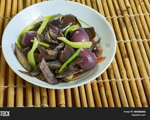
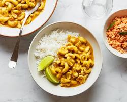

Polos curry, also known as jackfruit curry, is a vibrant and flavorful Sri Lankan dish that's sure to tantalize your taste buds. It's a symphony of textures and tastes, featuring the unique jackfruit as the star ingredient. Enjoy your delicious polo curry and let the vibrant flavors of Sri Lanka transport you to a culinary paradise.

Fish Ambul Thiyal, also known as sour fish curry, is a cornerstone of Sri Lankan cuisine. It's not your typical curry – it's a vibrant dance of tangy and savory flavors, a testament to the country's love for bold and complex dishes. Buckle up for a culinary adventure with this unforgettable curry.

Wambatu Moju is a delicious Sri Lankan dish made with eggplant (wambatu), onions, spices, vinegar, and sugar. It's a flavorful and tangy condiment that goes well with rice, bread, or as a side dish.
Sri Lankan Cashew Curry, also known as "Kaju Curry," is a flavorful and creamy dish made with cashew nuts cooked in a rich, aromatic curry sauce.
